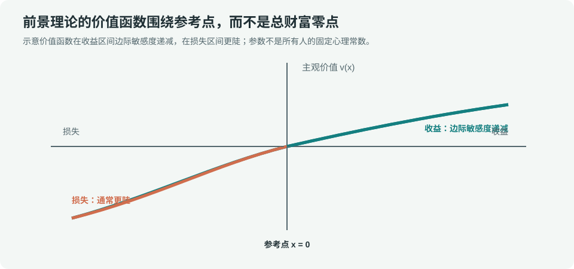
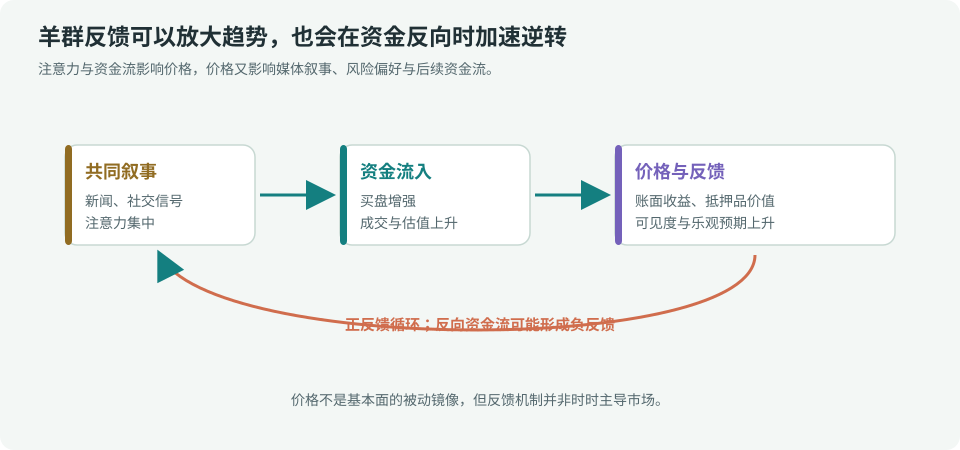

CHAPTER 17 · EVIDENCE-BASED INVESTING
行为金融学：参考点、损失厌恶与投资者偏差
以原始前景理论和账户交易研究解释损失厌恶、处置效应、羊群反馈，并把行为偏差转成可审计的决策流程。
同样的最终财富，为什么换一种说法就会改变选择？
选择A：确定获得500元；选择B：50%概率获得1000元、50%概率获得0元。两者期望收益相同，但很多人在收益框架下偏好确定结果。把问题改成确定损失500元与50%概率损失1000元、50%不损失，偏好可能反转。这个现象说明决策者并非只按最终财富的期望值排序。
行为金融学研究心理表征、注意力、社会互动和制度约束如何影响金融决策。它不是把所有错误都归咎于“人不理性”，而是提出可以检验的机制：参考点如何形成、概率怎样被主观加权、交易者怎样从过去经验更新信念。
前景理论：结果相对参考点被编码为收益或损失
Kahneman与Tversky的前景理论用价值函数描述相对参考点的结果，并用决策权重描述人们对概率的非线性处理。典型示意中，收益区间呈凹形、损失区间呈凸形，且损失侧更陡；这能解释收益情景中的风险规避、损失情景中的风险寻求倾向。完整模型还包含概率权重和选择编辑过程，不能只用一条S形曲线代表全部理论。

价值函数实验：改变参考点、曲率与损失厌恶系数
下面使用一组纯教学参数：收益和损失幅度都为1000，α=β=0.88，λ=2.25。模型输出的损失价值绝对值是收益价值的2.25倍。它只展示函数形状，不表示真实投资者都会以2.25倍感受亏损，也没有加入完整的概率加权函数。
常见认知偏差：把直觉变成需要检查的假设
过度自信会让人低估预测区间、交易成本与错误概率；确认偏误让研究者更容易寻找支持既有观点的证据；锚定使买入价、历史高点或分析师目标价变成不合理参照；可得性让近期新闻在判断中权重过大；代表性则可能把短期模式误认成稳定规律。
这些偏差不是一个标签就能解释所有交易行为。应明确它们如何影响具体流程：例如研究者只筛选支持性数据、交易者把成本价当成合理卖出价、投资者把最近一次大涨外推到长期预期。把偏差落实到记录、阈值和复核动作，才有管理价值。
处置效应：卖出赢家、继续持有输家
Odean对10,000个折扣经纪账户的交易记录研究发现，样本投资者更倾向实现盈利头寸而不是亏损头寸；该现象在控制再平衡与低价股交易成本等解释后仍存在。研究还报告，被卖出的赢家随后表现优于被继续持有的输家。该结论来自特定历史样本，不代表每位投资者或每个市场都具有相同幅度。
羊群与情绪：价格、注意力和资金流可能互相强化
当投资者观察他人交易、媒体叙事和价格走势时，可能把别人的行动当作私人信息的替代品。共同买入会推高价格，价格上涨又吸引关注和资金流；在负面冲击下，同一机制可能反向运行。羊群行为可由信息瀑布、职业激励、基准约束或流动性冲击等不同机制产生。

情绪指标如融资余额、基金申赎、期权偏度、成交集中度和新闻情绪，都是有定义与覆盖范围的代理变量。代理指标上升不等于市场一定见顶；需要验证时间窗口、数据修订、市场制度和与基本面变量的增量信息。
行为干预：用流程设计替代“靠意志力克服偏差”
可执行的决策卫生包括：交易前写下投资假设与反证条件；将目标价与买入成本分开；先定义组合风险预算再决定仓位；设立反方审阅者；记录买入与卖出的真实理由；把预测写成区间而不是单点；复盘时区分运气与决策质量。
对于高频查看价格的人，减少无意义通知、固定复盘时间可能比反复承诺“保持理性”更有效。行为干预本身也有代价：过度规则化可能忽略税务、流动性或基本面新信息，因此应预设合理的例外流程并记录原因。
研究者如何识别行为机制，而不是事后给人贴标签？
检查题
- 前景理论的价值函数以什么为参考点？概率权重又描述什么？
- 为什么一条损失厌恶曲线不能代表完整的前景理论？
- 处置效应研究观察到什么行为，又有哪些外推限制？
- 哪些事前流程能减少锚定、确认偏误与过度交易？
行为金融研究需要清晰的可观察变量、合理的替代解释和可重复样本。行为机制可以解释市场现象，但不能成为事后解释所有价格变化的万能故事。
参考资料与适用范围
引用资料用于核对定义、理论或研究设计。学术研究的样本和市场范围不自动适用于其他市场；本章计算器和图表中的数值均为构造示例。